This document provides basic troubleshooting steps for dealer-supported hardware issues. Follow the steps below to identify and resolve common problems.
Dell Optiplex: 3000/3060/3070/3080/3090
Basic Troubleshooting:
- Ensure the computer is powered on. Look for power indicator lights.
- Powercycle PC by pressing on the power button.
- Check external power. Make sure power cord is securely plugged into the computer and outlet.
- Unplug the power cord, press and hold the power button for 15-20 seconds to discharge residual power, reconnect power cord and turn it on again.
- Check monitor connection. Ensure the monitor cable is securely connected to both the computer and monitor.
Note: Monitors are not PCS!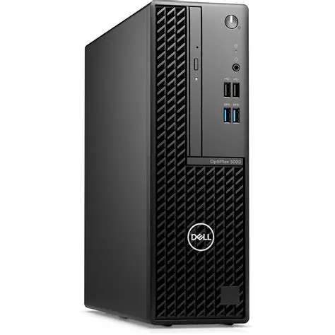
Dell Optiplex Micro: 7010 & 7020
Basic Troubleshooting:
- Check the power button: Ensure it is not stuck and try a different power outlet.
- Cycle the power: Unplug the computer, wait a few minutes, and plug it back in.
- Verify all cables and internal connections are secure.
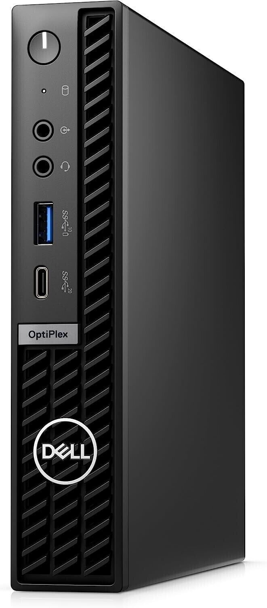
Dell Pro Micro QCM1250
Basic Troubleshooting:
- Disconnect external devices: Unplug all external peripherals, like USB drives, keyboards and monitors.
- Power Cycle: Shut down the system, unplug the power cable, and remove the battery (if applicable). Wait a few minutes, then reconnect the power and try restarting.
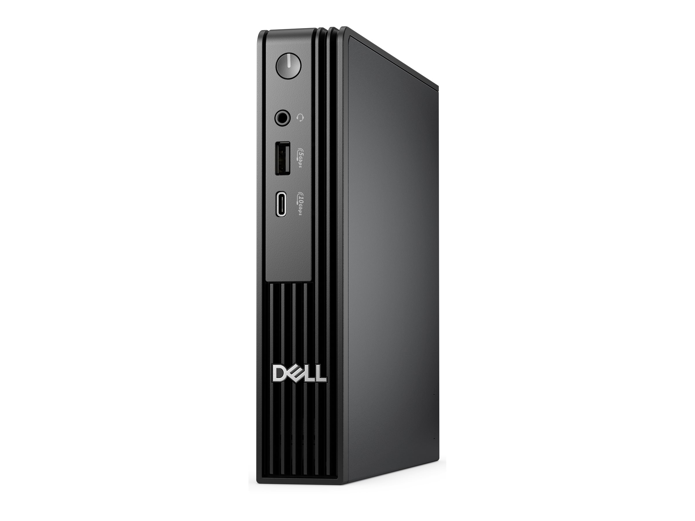
iPad (7th Gen or Higher)
Basic Troubleshooting:
- Restart the iPad: Press and hold the power button until the "slide to power off" slider appears. Slide it to turn off the device, then press and hold the power button again to turn it back on.
- Check for Software Updates: Go to Settings > General > Software Update to see if there are any available updates for your iPad.
- Reset network settings: If you're experiencing connectivity issues, go to Settings > General > Reset > Reset Network Settings. Note that this will erase saved Wi-Fi passwords.
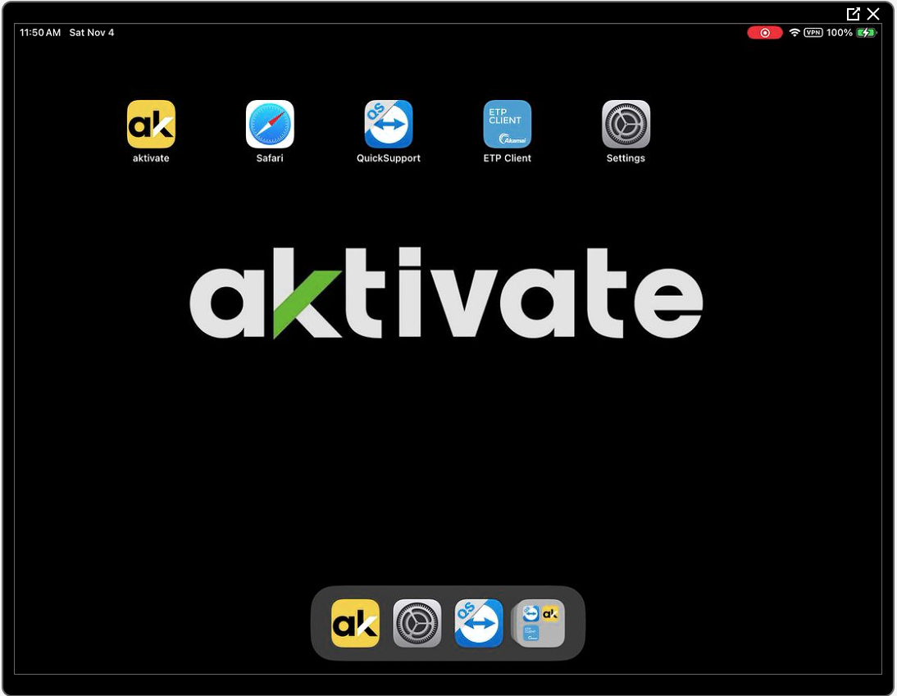
Cisco MX68
Basic Troubleshooting:
- Ensure the firewall is powered on and all cables are securely connected.
- Check internet connection and upstream firewall settings.
If there are no lights on an ethernet port when a device is connected:
- Confirm the port is enabled in the Cisco Meraki Dashboard
- Check that the connected device is powered on and functioning correctly
If the power light is solid amber:
- Verify the uplink cable is properly connected and the upstream internet source is working.
- Check that any upstream firewall is configured to allow Meraki's necessary outbound connections.
- Check the appliance's local status page to ensure the management IP is configured correctly
Click here for more LED Troubleshooting
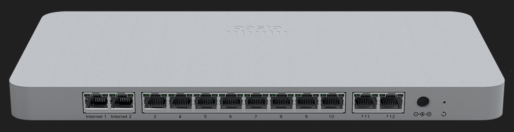
Exceed Articles: If the issue persists, click here.
Cisco MR28 (Wireless Access Point)
Basic Troubleshooting:
Check LED Indicators for any unusual patterns or colors.
- Solid Green: Powered on and connected to the internet.
- Solid Blue: Powered on, connected to the interent and has clients connected.
- Blinking Orange: Booting up or upgrading firmware. This is normal, but if it persists, there may be a hardware isssue or the AP can't find an uplink.
- Solid Orange: The AP is booting up or has a hardware issue.
- Check Cables: Ensure the Ethernet cable is fully and securely seated in both the AP and the switch port.
- Test the wired connection: Connect a client device directly to the network to rule out upstream issues.
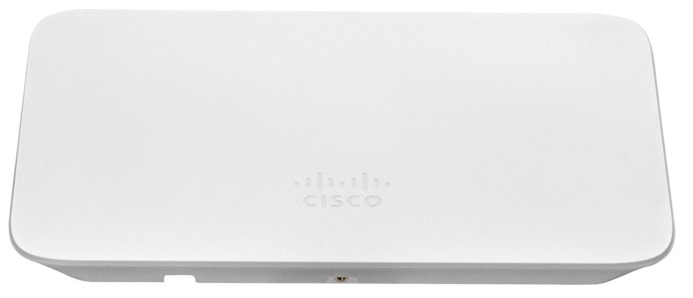
Exceed Articles: If the issue persists, click here.
Dell PowerConnect 2816
Basic Troubleshooting:
- Check the power cable and outlet: Ensure the power cord is securely plugged into both the switch and a working outlet.
- Power cycle the switch: Disconnect the power cord from the back of the switch. Wait for at least 30 seconds to drain any residual power, then reconnect it and power the unit on.
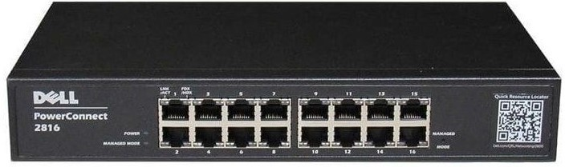
Dell X1018p
Basic Troubleshooting:
- Check the power cable and outlet: Ensure the power cord is securely plugged into both the switch and a working outlet.
- Power cycle the switch: Disconnect the power cord from the back of the Dell device. Wait for at least 30 seconds to drain any residual power, then reconnect it and power the unit on.
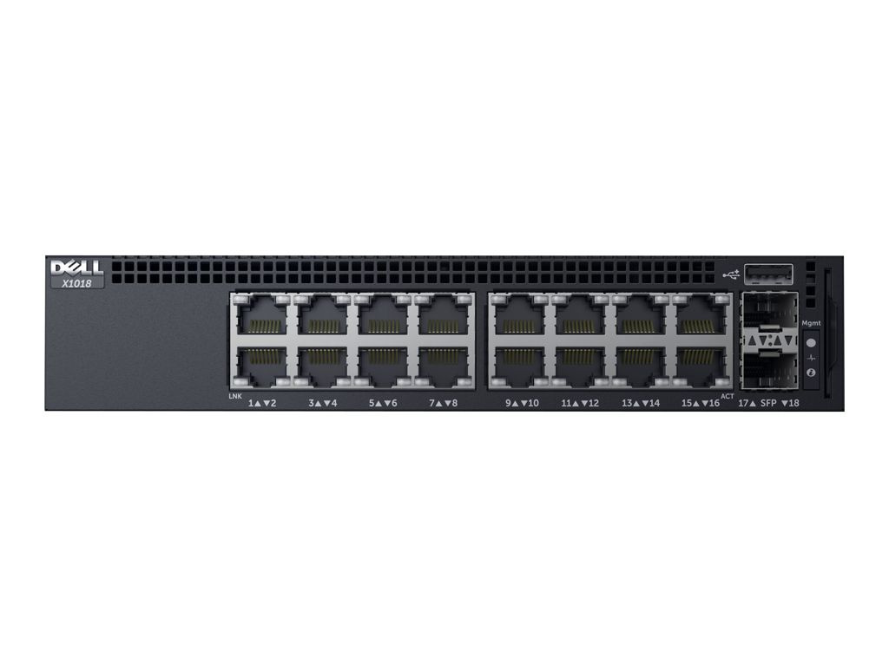
NetGear GS716T-300NAS
Basic Troubleshooting:
- Check physical connections: Ensure the power cord is securely plugged into both the switch and a working power outlet. Confirm all ethernet cables are firmly connected to the correct ports
- Inspect the LEDs:
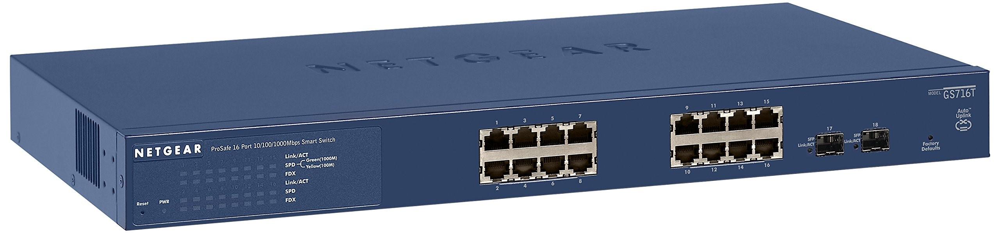
Exceed Articles: If the issue persists, click here.
Ingenico Lane/7000
Basic Troubleshooting:
- Start with a simple reboot by holding the yellow key and the # key for 3 seconds
- Restart the terminal by unplugging it from power, waiting 10 seconds, and plugging it back in.
- Ensure the power and network cables are securely plugged into both the terminal and the wall or router.
- Confirm network status: Check the connection status by pressing 0000 on the keypad and looking for "ACTIVE" or "CONNECTED".
- Ensure the ethernet connection is plugged into a live port on the switch.
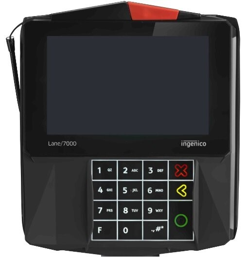
Ingenico Link/2500
Basic Troubleshooting:
- Press and hold the yellow button and the # button simultaneously for 3-5 seconds until the device turns off. Press the green button to power it back on.
- On the host device, reset network settings and reconnect to Wi-Fi or re-pair the bluetooth device.
- Check communication mode: From the idle screen, press 0001, select Communication Type, and ensure it is set to WIFI or Bluetooth_Serial as needed.
- Ensure Bluetooth and Local Network permissions are enabled in the iPad settings.
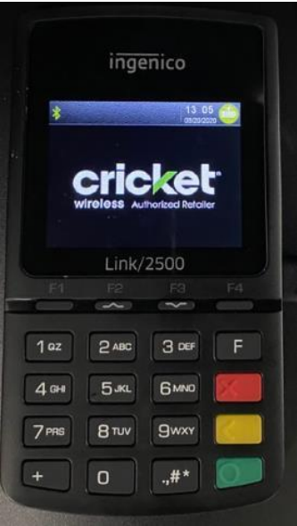
Basic Troubleshooting:
- Check for physical obstructions or lock issues:
- Verify the cable connection to the printer or POS and try restarting the connected devices
- Check the lock: Ensure the keyhole is in the vertical (unlocked) position. If it's horizontal, the drawer is locked.
- Ensure it's closed: The drawer may not be open if it's not fully closed. Manually push it to ensure it's completely closed.
- Use the key: Try to open the drawer with the physical key. If the key doesn't work, the mechanical mechanism may be jammed or broken.
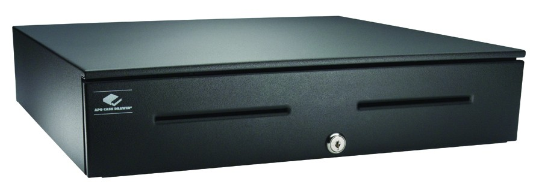
Exceed Articles: If the issue persists, click here.
Koamtac Data Collector (KDC)
Basic Troubleshooting:
- Soft reset: Hold the power button for an extended period to force a restart.
- Cannot Pair: Ensure the bluetooth is enabled on both the KDC and the host device. Unpair and re-pair the devices.
- Device not powering on: Charge the device for at least 30 minutes before trying again.

Exceed Articles: If the issue persists, click here.
Symbol LS2208
Basic Troubleshooting:
- Check USB Connection: Unplug the scanner, then plug it back in.
- Try a different port: Connect the scanner to a different USB port on your computer or accessory hub.
- Check if the computer recognizes it: On a Windows computer, go to "Control Panel" > "Devices and Printers" to see if the scanner is listed.
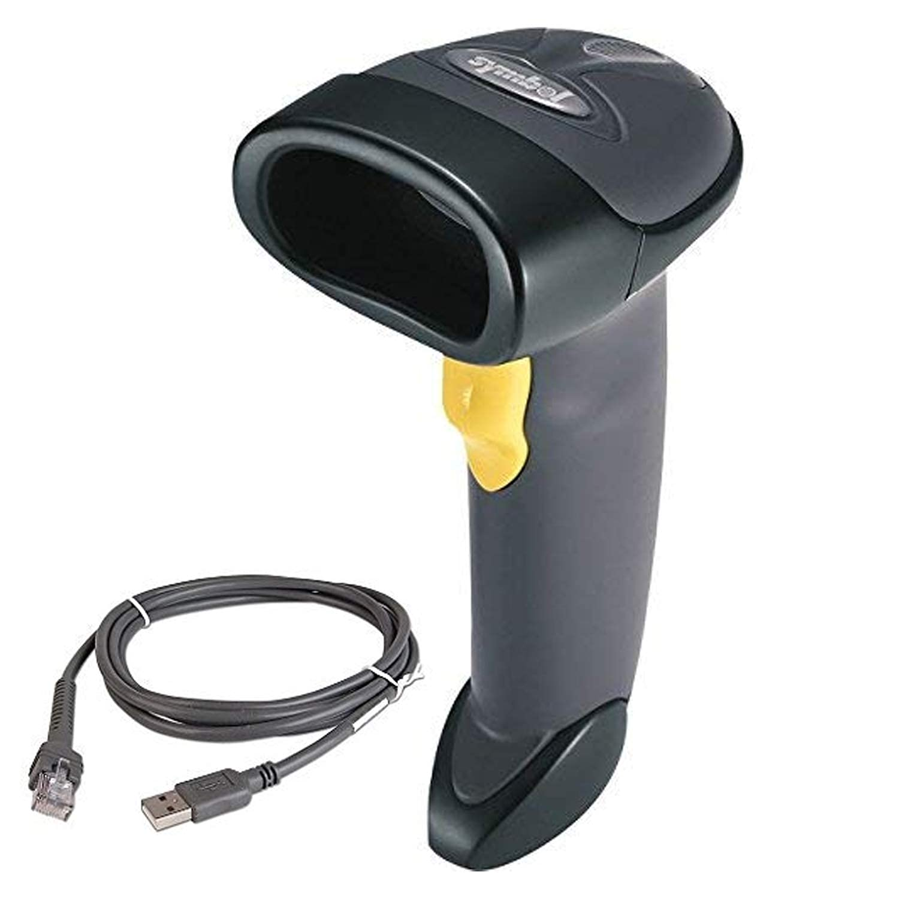
Exceed Articles: If the issue persists, click here.
Custom Engineering Kube II
Basic Troubleshooting:
- Inspect the cables: Make sure that cables are not damaged and are properly connected.
- Power cycle printer: Turn the printer off, wait for a few seconds, and then turn it back on.
- Reseat Ethernet cable: Ensure ethernet cable is connected to the printer and the switch.
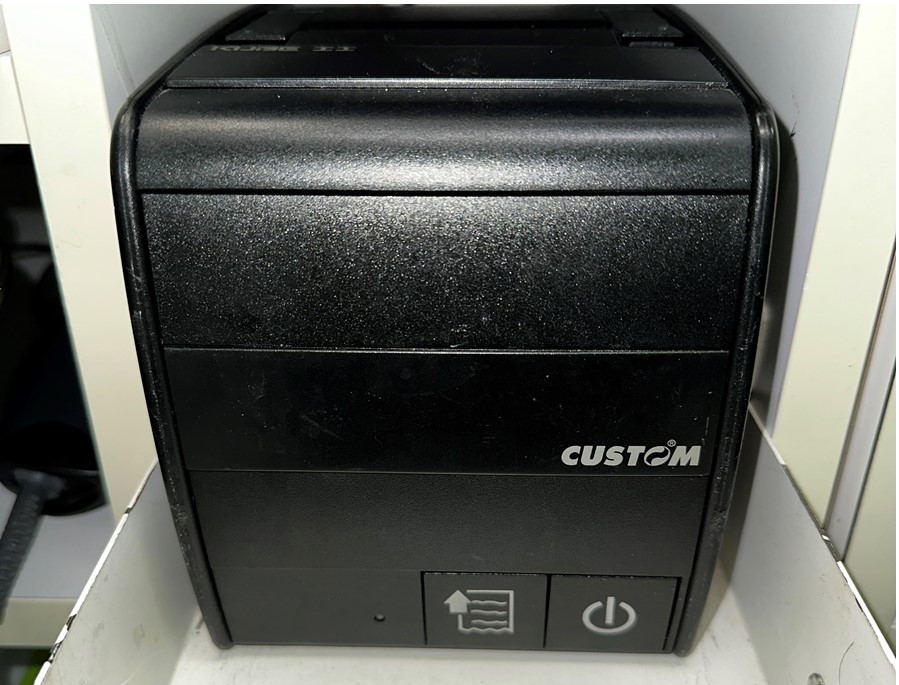
Custom Engineering Q3x
Basic Troubleshooting:
- Inspect the cables: Make sure that cables are not damaged and are properly connected.
- Power cycle printer: Turn the printer off, wait for a few seconds, and then turn it back on.
- Reset Ethernet cable: Ensure ethernet cable is connected to the printer and the switch.
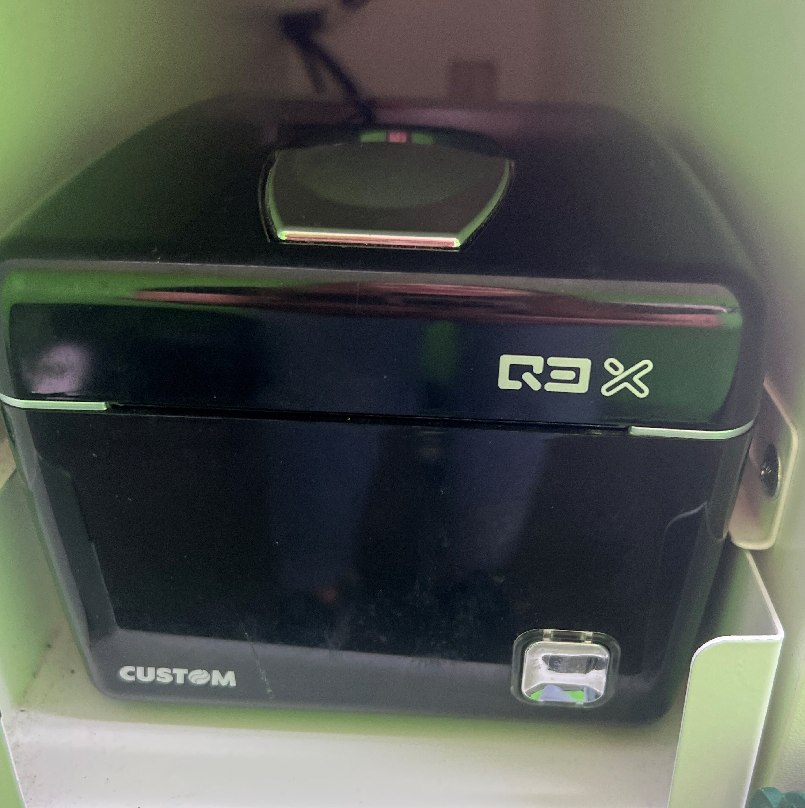
Star Micro Cloud printer (Models TSP650II, TSP700II, TSP100IV)
Basic Troubleshooting:
- Ensure the paper roll is correctly positioned and loaded.
- Network Connectivity: Check the printer's LED indicators for error lights and ensure the printer's IP address matches the network's address.
- Ensure Ethernet cable is connected and secured. Make sure ethernet cable is connected to the proper switch.
- Ensure Star printer is selected in Aktivate's printer settings on the iPad.
Star Printer TSP650II:
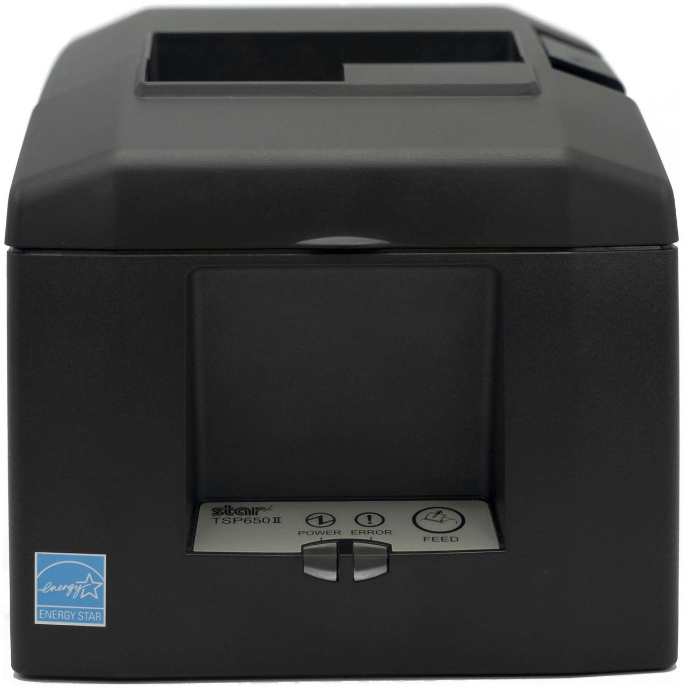
Star Printer TSP700II:
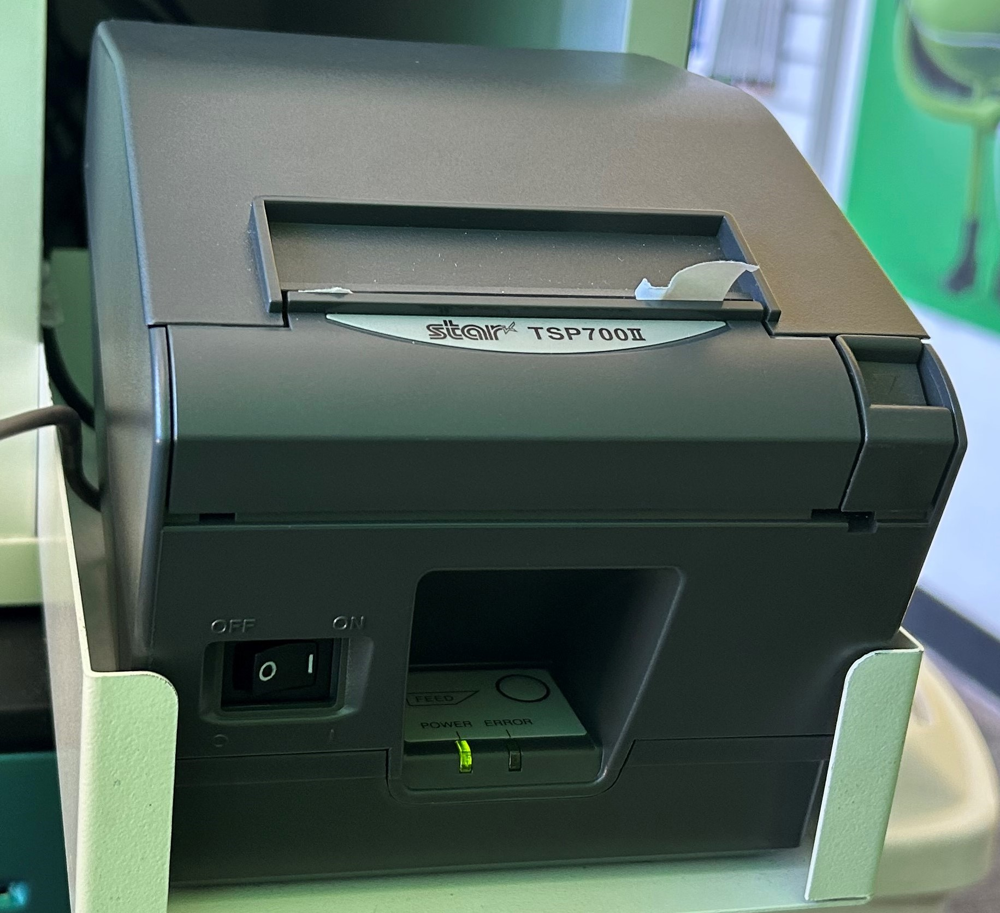
Exceed Articles: If the issue persists, click here.
Epson TM-T88VI
Basic Troubleshooting:
- Ensure the printer is powered on and connected to the same network as the iPad.
- Restart the printer: Turn it off, wait a few seconds, and turn it back on.
- Check Paper Loading: Ensure the thermal paper is loaded correctly
- Adjust Print Settings: Press and hold the 'Feed' button until the printer emits a beep, then release it to print a settings report
- Ensure Ethernet cable is connected and secured. Make sure ethernet cable is connected to the proper switch.
- Ensure Epson printer is selected in Aktivate's printer settings on the iPad.
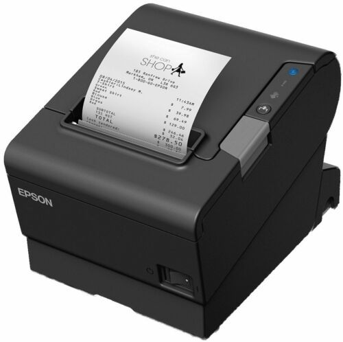
Exceed Articles: If the issue persists, click here.
Dell C3760DN
Basic Troubleshooting:
- Check Power Connection: Ensure the power cable is securely connected to the printer and the power outlet.
- Turn Off and Restart: If issues persist, turn off the printer, wait for 10 seconds and then turn it back on.
- Check Network: Make sure ethernet cable is plugged into the printer and reseat cable. Power cycle printer after reseating cable.
- Follow Ethernet connection: Ensure ethernet cable is connected to switch, port in which it's connected is active and transmitting network connectivity.
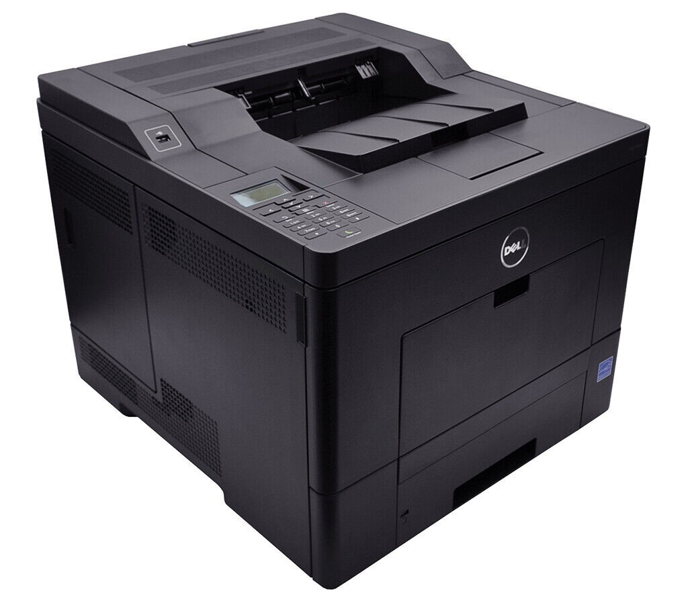
Exceed Articles: If the issue persists, click here.
Dell C2660DN
Basic Troubleshooting:
- Check Power Connection: Ensure the power cable is securely connected to the printer and the power outlet.
- Turn Off and Restart: If issues persist, turn off the printer, wait for 10 seconds and then turn it back on.
- Check Network: Make sure ethernet cable is plugged into the printer and reseat cable. Power cycle printer after reseating cable.
- Follow Ethernet connection: Ensure ethernet cable is connected to switch, port in which it's connected is active and transmitting network connectivity.
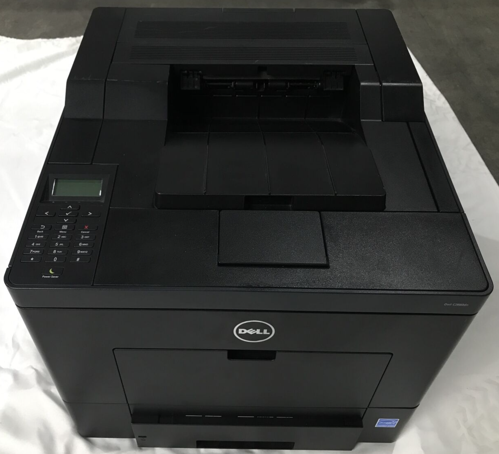
Exceed Articles: If the issue persists, click here.
Xerox Phaser 6022
Basic Troubleshooting:
- Check Power Connection: Ensure the power cable is securely connected to the printer and the power outlet.
- Turn Off and Restart: If issues persist, turn off the printer, wait for 10 seconds and then turn it back on.
- Check Network: Make sure ethernet cable is plugged into the printer and reseat cable. Power cycle printer after reseating cable.
- Follow Ethernet connection: Ensure ethernet cable is connected to switch, port in which it's connected is active and transmitting network connectivity.
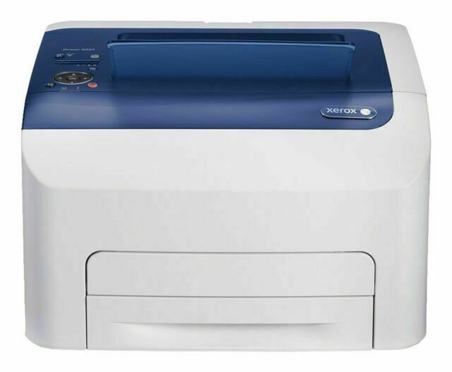
Exceed Articles: If the issue persists, click here.
Lexmark CX331
Basic Troubleshooting:
- Check Power Connection: Ensure the power cable is securely connected to the printer and the power outlet.
- Turn Off and Restart: If issues persist, turn off the printer, wait for 10 seconds and then turn it back on.
- Check Network: Make sure ethernet cable is plugged into the printer and reseat cable. Power cycle printer after reseating cable.
- Follow Ethernet connection: Ensure ethernet cable is connected to switch, port in which it's connected is active and transmitting network connectivity.
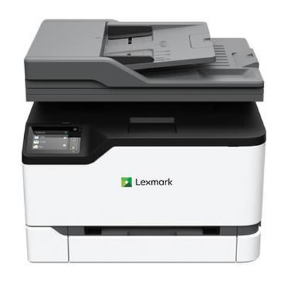
Exceed Articles: If the issue persists, click here.